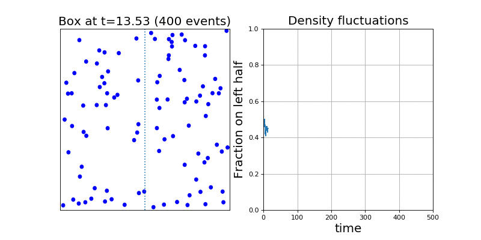

Projects
Interactive Applets for understanding phase transitions
Februrary 2019
When we were learning about phase transitions in my statistical mechanics class, I thought it would be fun to get a better grasp of the Landau Free Energy by getting my hands dirty and fiddling around with the model parameters. So I made some interactive javascript applets to help explain the physics.
Click here to try playing with the applets yourself!
Lecture Notes
January 2019
In winter of 2019, I decided to write up
lecture notes for my classes, where I explained physics/math concepts with a characteristic personal touch. My classmates really enjoyed my notes, and a lot of people ended up reading them.

My notes for Physics 171 (Statistical Mechanics II) can be found
here. They're very detailed and elucidating, and I'm rather proud of them. Hopefully one day I'll be able to consolidate them into a more formal resource.
My notes for EE 261 on Fourier Transforms can be found
here. I abandoned these notes after a while, since I was getting much more out of writing the statistical mechanics notes.
Impatient IMSLP
September 2018
Classical musicians from all around the world are familiar with the
IMSLP, a website where you can download lots of publically available sheet music. Unfortunately, if you don't pay for their subscription, you have to wait 15 seconds to download music. So I wrote a
simple Chrome extension that skips the 15-second waiting period.
Ideal Gas Simulations
June 2018
For the longest time I was confused and amazed by the simplest results of statistical mechanics. Somehow, the macroscopic behavior of a gas could be explained from the details of little particles whizzing around, but even after seeing the equations, I was still somewhat unsettled. So to properly convince myself, I coded up a little python engine to simulate a hard-sphere classical ideal gas.

If you want to read up on the details, I wrote up a
nice and detailed report for my computational physics class.